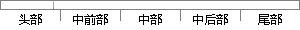

三、在我创建的歌单模块中，我创建的歌单与音乐之间关联的问题；
片段位置图

相似结果|
相似片段 1：的特点构成了目前音乐社交化发展的大趋势。譬如，在音乐社交化方面，多米音乐和唱吧都率先取得了突破：多米音乐在听的基础需求上，让用户可以自由的创建歌单，并围绕歌单互动分享，通过用户和用户之间的交流，来帮助
|
※ 片段修改建议 ※
近似词参考：- 创建：建立 创立
- 创建：建立 创立
- 关联：联系关系
- 问题：题目
系统自动生成语句：三、在我建立的歌单模块中，我建立的歌单与音乐之间联系关系的题目；
注：本片段修改建议为系统自动生成，仅供参考。